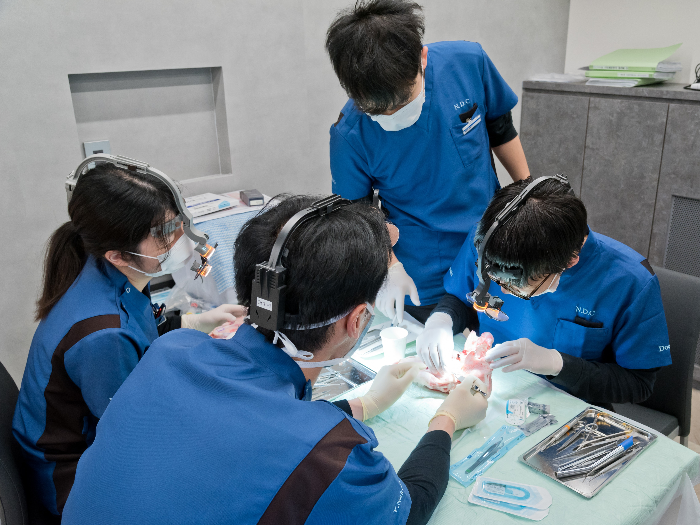
01
成長できる環境
担当の先輩ドクターによる日々の指導と、3年間の成長ロードマップで基礎から段階的にステップアップ。学びたいセミナーへの積極的な費用支援も整っています。
6つの教育・サポート体制を見る →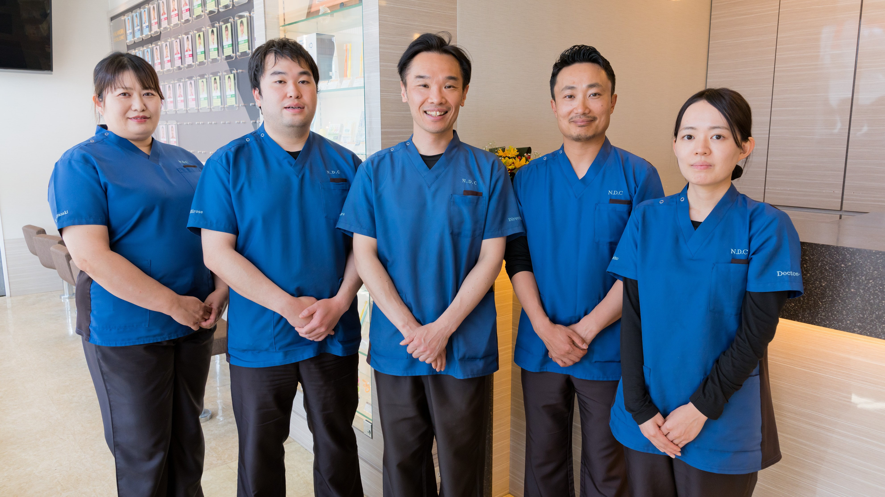
LEARN WITH CONFIDENCE, GROW IN YOUR OWN WAY.
固定給の安心感と、先輩ドクターによる丁寧な指導。
自分に合った働き方で、着実に成長できる場所。
医院の規模や診療体制、待遇の目安を一目で把握できるよう、事実データに絞って公開しています。
スタッフ総数
多職種チームで休暇取得時も互いにフォロー
在籍歯科医師数（非常勤含む）
困ったときにすぐ相談できる先輩Drが在籍
診療チェア数
歯科用CTなど充実した医療設備を完備
1日の平均来院患者数
一般歯科から専門治療まで幅広く経験可能
卒後2年目・週5常勤総支給
固定給ベースで収入の不安なく臨床に集中
選べる常勤勤務スタイル
週休3日・週休2日のどちらも正社員として選択可
段階的教育ロードマップ
基礎習得から一般臨床、専門治療まで着実に育成
セミナー参加費用補助
年上限40万円・高額セミナー全額負担実績あり

担当の先輩ドクターによる日々の指導と、3年間の成長ロードマップで基礎から段階的にステップアップ。学びたいセミナーへの積極的な費用支援も整っています。
6つの教育・サポート体制を見る →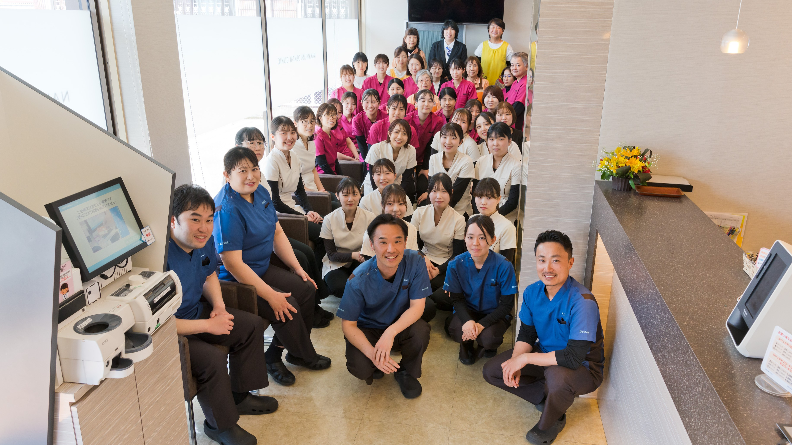
歯科医師9名・スタッフ総勢47名のチーム体制だから、休暇取得時も互いにフォロー。産休・育休や男性歯科医師の育休実績、岡山からの新幹線通勤サポートもあります。
勤務環境・福利厚生を見る →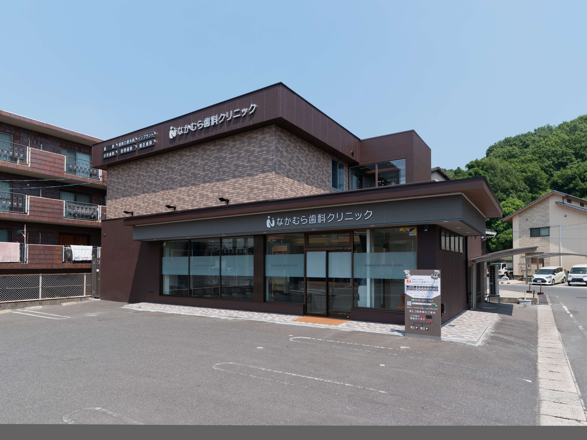
固定給をベースにした安定した給与体系のもと、週5日・週4日から自分らしい働き方を選択可能。一般臨床を土台に、インプラントやマウスピース矯正へも挑戦できます。
キャリアパス・給与を見る →
患者さんを担当し、自分で考えて診療に取り組む。
その一方で、難しい症例や判断に迷う場面では、院長や先輩ドクターがサポートします。
挑戦する機会と、安心して相談できる環境の両方を大切にしています。
臨床経験をしっかり積みたい方も、プライベートの時間を大切にしたい方も、どちらも対等な常勤スタイルとして選択できます。どちらを選んでも、周囲のサポートを受けながら安心して成長できます。
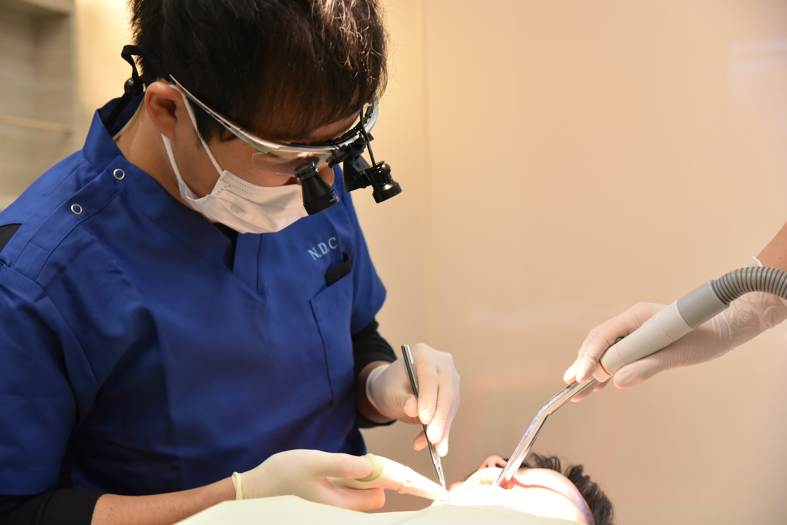
基礎から幅広く学び、臨床経験をしっかり積み重ねたい方へ。日々の診療を通じて着実に成長し、できることを少しずつ増やしていきたい先生におすすめの働き方です。先輩ドクターのサポートのもと、インプラントなどの専門的な分野にも段階的に挑戦できます。

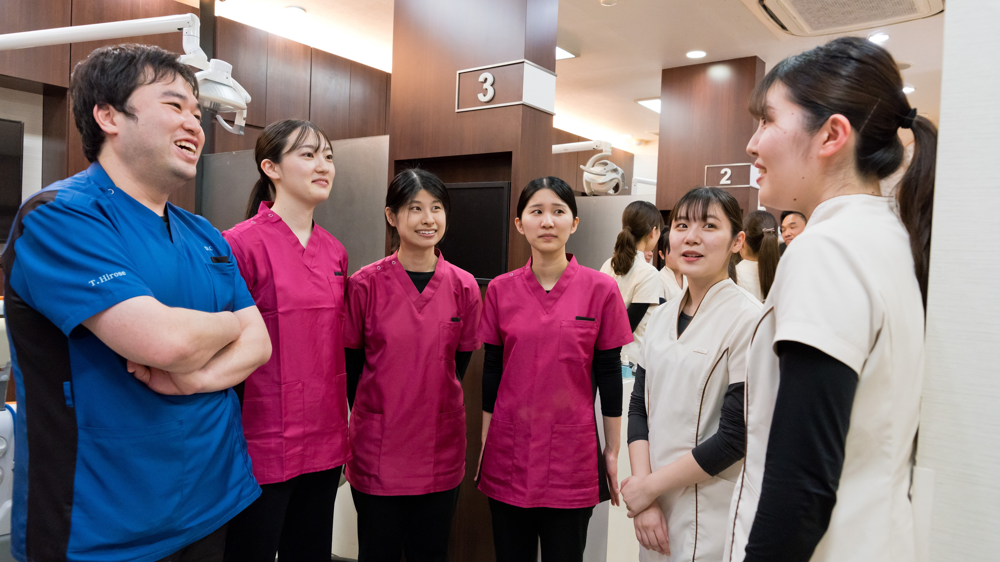
仕事だけでなく、自分の時間も大切にしたい方へ。趣味や習い事、旅行など、プライベートも充実させながら、歯科医師として長く働き続けられる勤務スタイルです。
5つの質問に答えるだけ。あなたにぴったりの働き方を見つけてみましょう。

若手のうちは、技術や経験を積むことが何より大切な時期。だからこそ、当院では安定した固定給をベースに、安心して臨床に取り組める給与体系を整えています。
※基本給339,000円＋固定残業代（45時間分）111,000円＋住宅手当50,000円＋交通費5,000円を含みます。
※月額総支給額×12か月で算出した参考年収（住宅手当・交通費を含む／賞与等は含みません）。住宅手当は遠方から当院近辺に転居する常勤歯科医師が対象です。
※支給合計には「基本給＋固定残業代＋住宅手当（50,000円）＋交通費（5,000円）」を含みます。昇給年1回・特別手当（医院規定）あり。
← 左右にスクロールできます →| 卒後年数 | 基本給 | 固定残業代 | 固定残業時間 | 支給合計 |
|---|---|---|---|---|
| 2年目 | 339,000円 | 111,000円 | 45時間 | 505,000円 |
| 3年目 | 354,000円 | 116,000円 | 45時間 | 525,000円 |
| 4年目 | 377,000円 | 123,000円 | 45時間 | 555,000円 |
| 5年目 | 415,000円 | 135,000円 | 45時間 | 605,000円 |
| 6年目 | 452,000円 | 148,000円 | 45時間 | 655,000円 |
| 7年目以降 | 477,000円 | 173,000円 | 50時間 | 705,000円 |
※支給合計には「基本給＋固定残業代＋住宅手当（50,000円）＋交通費（5,000円）」を含みます。昇給年1回・特別手当（医院規定）あり。
← 左右にスクロールできます →| 卒後年数 | 基本給 | 固定残業代 | 固定残業時間 | 支給合計 |
|---|---|---|---|---|
| 2年目 | 271,600円 | 73,500円 | 30時間 | 400,100円 |
| 3年目 | 283,700円 | 76,800円 | 30時間 | 415,500円 |
| 4年目 | 302,100円 | 81,800円 | 30時間 | 438,900円 |
| 5年目 | 332,500円 | 90,000円 | 30時間 | 477,500円 |
| 6年目 | 362,100円 | 98,000円 | 30時間 | 515,100円 |
| 7年目以降 | 382,200円 | 137,900円 | 40時間 | 575,100円 |
当院では、日々の診療に必要な練習は、基本的に診療時間内に行っています。固定残業時間は、設定時間分の残業を求めるものではありません。さらに技術を磨きたい、もっと練習したいという先生の意欲にも応えられるよう、余裕を持った時間数を設定しています。
実際の月間残業時間は平均約15時間です。固定残業時間に満たない場合も、固定残業代は全額支給します。
※固定残業代は、設定された時間分の時間外労働に対する手当として支給するものです。設定時間を超えた時間外労働については、超過分を別途支給いたします。
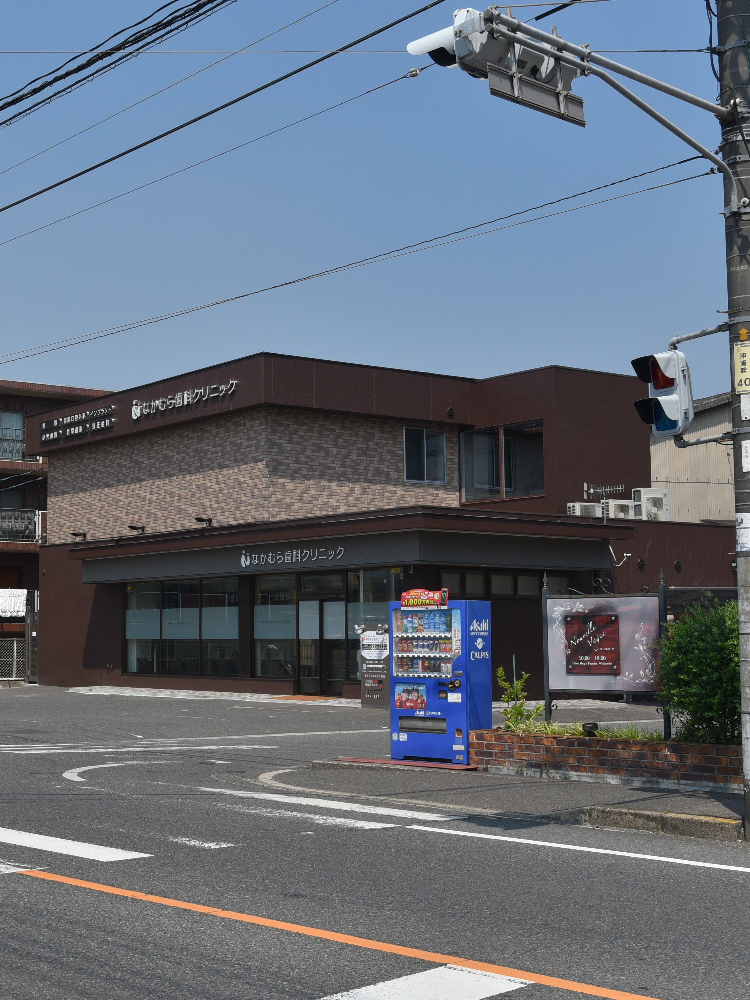
岡山から新幹線を利用して通勤するドクターも在籍しています。交通費も全額支給。福山市外から通勤する先生も安心して働ける環境を整えています。
・交通費全額支給（新幹線通勤対応）／転居時：住宅手当5万円・引越しお祝い金10万円〜（相談）
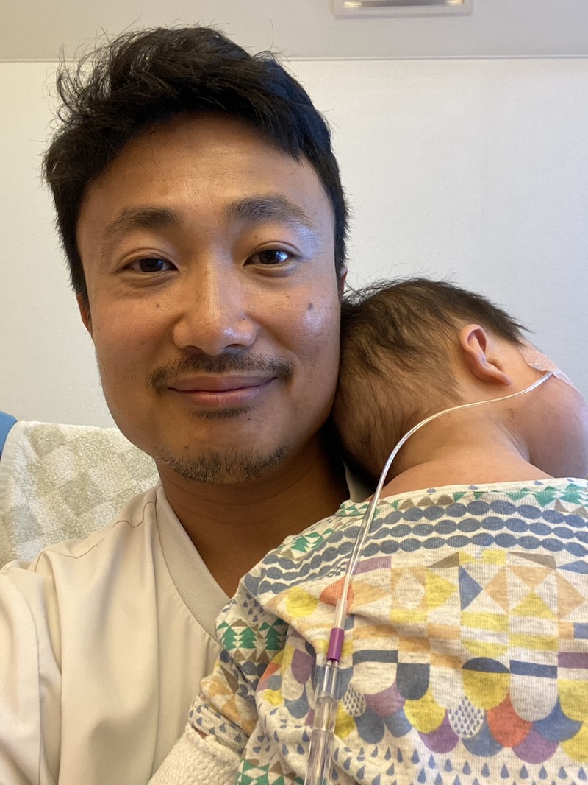
産休・育休の取得・復職実績に加え、男性歯科医師の育休取得実績もあります。スタッフ総勢47名の体制で互いにフォローし合い、ライフステージの変化に合わせて働き続けられます。
福利厚生・育休実績について詳しく見る →「基礎から段階的に学べる仕組み」と「疑問をその日のうちに解消できる現場のフォロー」を組み合わせ、若手歯科医師が無理なく臨床力を高められる環境を整えています。
診療中の不安や迷いを翌日に持ち越さないため、レントゲンや口腔内写真を用いた症例検討・診療後の振り返りを重視。先輩Drや院長へいつでも相談できる環境が、日々の着実な成長につながります。
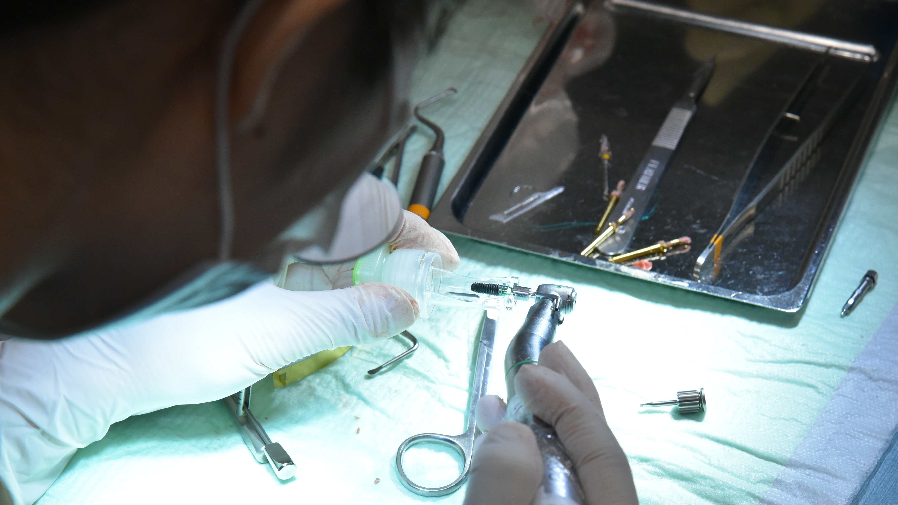
いきなり患者様の診療を任せるのではなく、マネキンやシンプルな模型を使った実習とテキスト学習からスタート。チェックシートで習得状況を一つずつ確認しながら、基礎技術を段階的に身につける仕組みです。
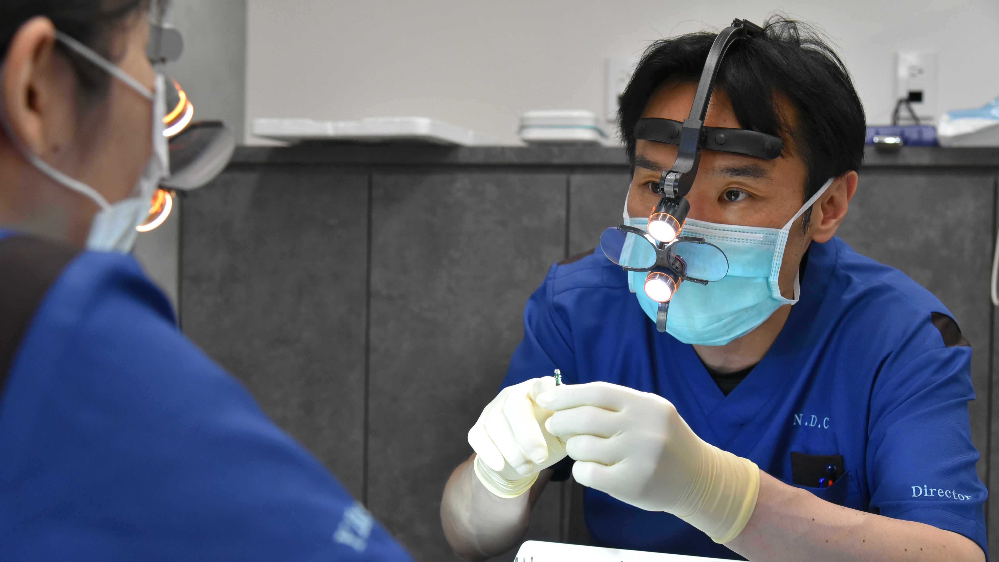
担当の先輩Drによる丁寧なレクチャーや、外科治療などの実践的な手技指導を実施。一人ひとりの習熟度や経験に合わせたアドバイスを受けられ、困ったときにはいつでも相談できる環境が整っています。
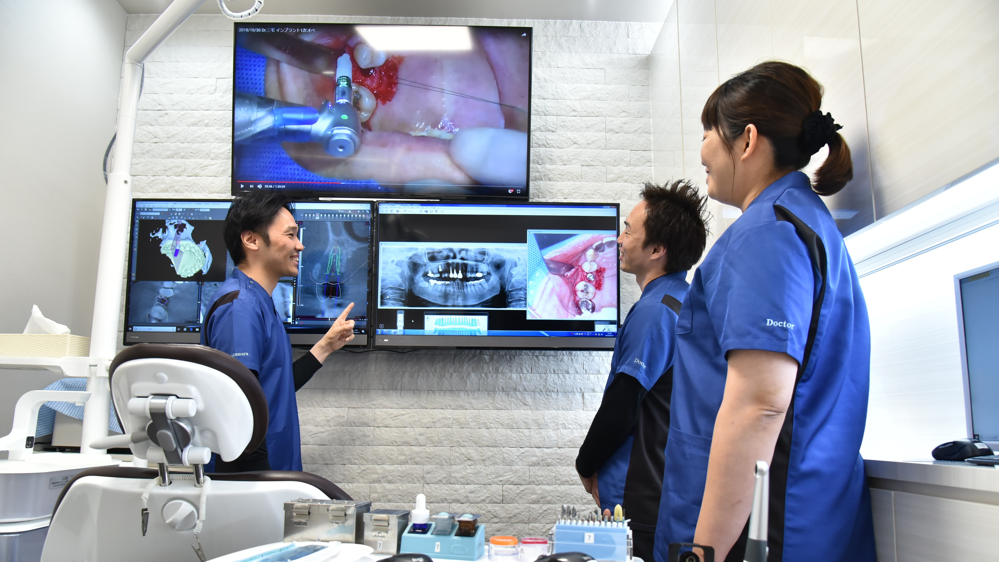
「その日の診療で生じた疑問を、その日のうちに解決する」ことを大切にしています。パノラマ・デンタルレントゲンや口腔内写真を用いた症例検討と診療内容のディスカッションを通じて、日々の不安を解消しながら臨床力を高めます。
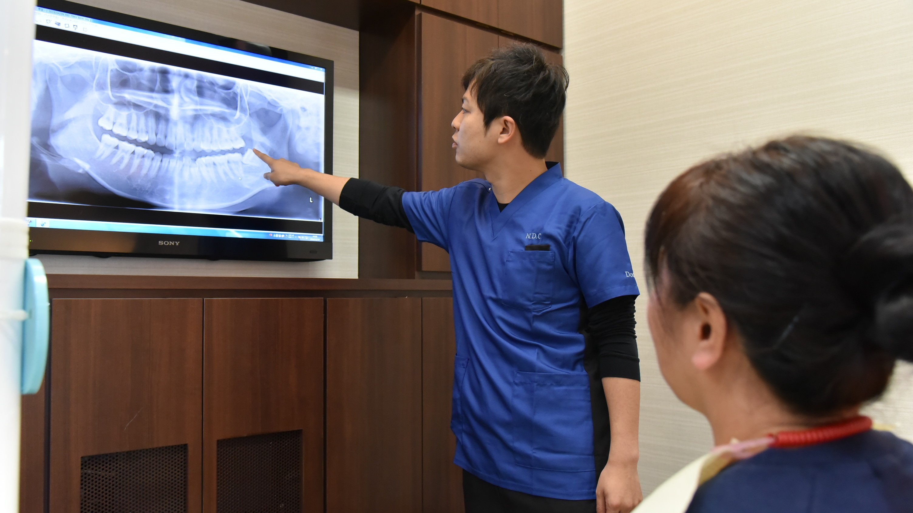
治療計画の立案から実際の治療、その後の治療経過の確認まで、患者様を継続的に担当する経験を積めます。主体的に考えて診療を進めつつ、判断に迷ったときやサポートが必要なときは院長・先輩Drがすぐにフォローします。
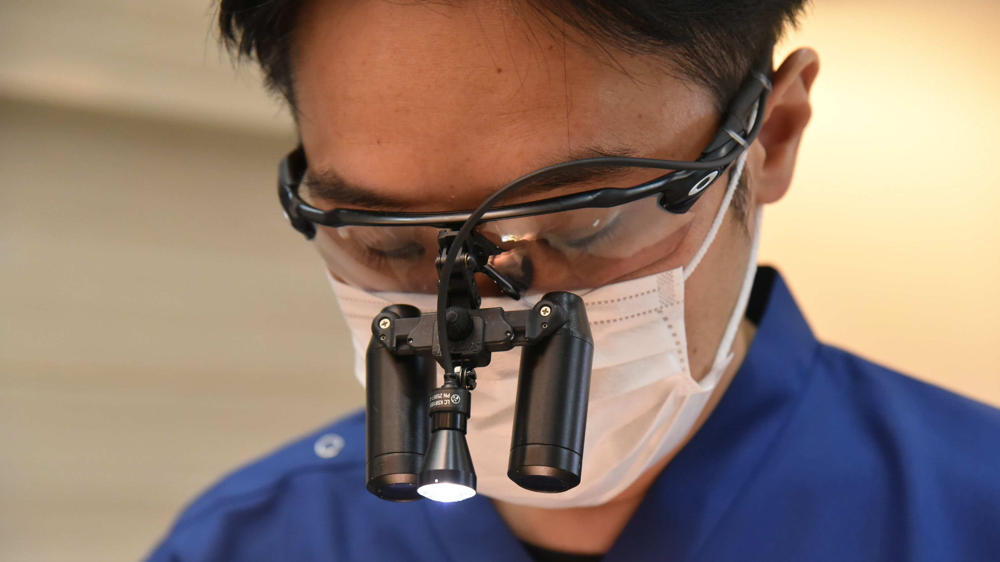
一般歯科の基礎を固めたうえで、自費補綴・インプラント・外科治療・マウスピース矯正など専門的な治療へと段階的に診療の幅を広げられます。見学やアシスト、術前診断から一歩ずつステップを踏める環境です。
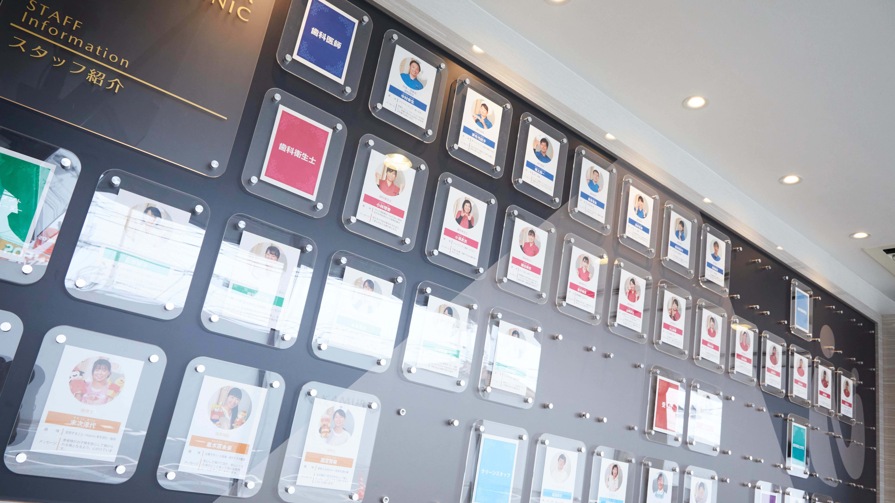
セミナー参加や学会参加、外部研修など、継続的な知識・技術の習得を積極的に支援しています。本人の学ぶ意欲や必要性に応じて、医院規定の補助に加えて費用を負担するケースもあり、自己成長を後押しします。
医院指定のセミナーだけでなく、先生自身が参加したいセミナーや習得したい技術があれば、ぜひ積極的に提案してください。
医院規定に基づく補助制度を設けていますが、実際には先生の学習意欲に応じて、費用を全額医院が負担しているケースも多くあります。先生自身が身につけたい知識や技術を、医院としてできる限り応援します。
※医院指定セミナーは全額医院負担です。希望する外部セミナーも遠慮なくご相談ください。
セミナー参加費用補助制度
| 勤続年数 | 1年目 | 2年目 | 3年目 | 4年目以降 |
|---|---|---|---|---|
| 医院負担割合 | 20% | 30% | 40% | 50% |
| 年間上限額 | 10万円 | 20万円 | 30万円 | 40万円 |
入職後1年目・2年目・3年目と、基礎から専門的な治療まで段階的にステップアップ。
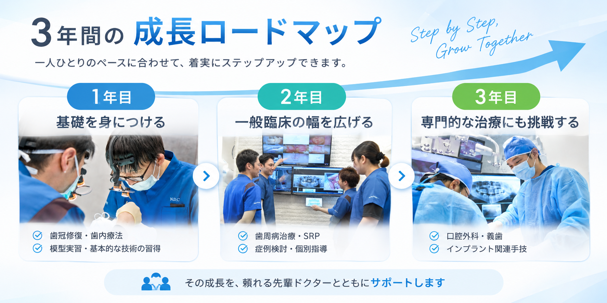
3年間の成長ロードマップ 画像エリア
ロードマップ画像（images/16.png）が横幅いっぱいに表示されます。
一人ひとりの経験や習熟度に合わせて、先輩ドクターがサポート。入職後1年目・2年目・3年目と、基礎から専門的な治療まで段階的に学べる環境を整えています。
※年次によって一律に治療を任せるものではありません。インビザラインなどの矯正治療についても、本人の希望や習熟度に応じて学べる選択肢の一つとしてご用意しています。
窩洞形成・CR修復・インレー・アンレー形成・支台歯形成・エンド修復など、基礎技術を段階的に習得します。
SRP・歯周外科をはじめ、一般臨床の幅を広げながら一口腔単位の診療を進めます。
切開・縫合・義歯・インプラント関連手技などへステップアップ。希望や習熟度に応じてインビザラインなどの矯正治療も学べます。
実際に働く歯科医師が語る、なかむら歯科での成長と働き方。
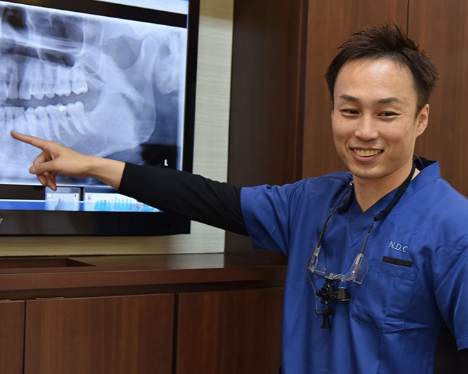
「見学したときの印象と、働き始めてからの印象にギャップがなかったことが良かったです。面接時に希望していた自費治療にも携わることができ、満足しています。」
将来的に実家の歯科医院を継承することを見据え、ニーズの高い自費補綴の治療経験を積めることと、実家から通いやすい距離にあることを重視して入職を決めました。
就職前の見学と入職後の印象にギャップがなく、スタッフ同士も仲が良いため働きやすい環境です。希望していた自費治療にも携わることができ、満足しています（※インプラントオペの見学機会もさらに増えると嬉しいです）。
将来どんな歯科医師になりたいかを明確にし、その実現につながる経験ができる職場を選ぶことが大切だと思います。治療だけでなくその後の経過まで見届けることで得られる学びも多いため、長期的に成長できる環境を選んでほしいです。
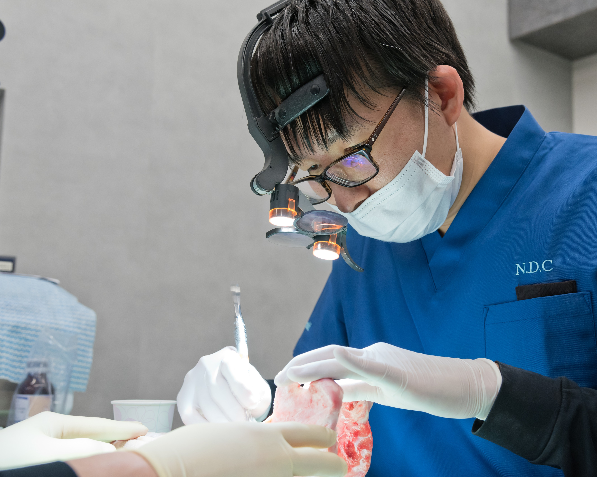
「職場は明るく、困ったことや気になることがあれば相談しやすい環境です。歯科医師だけでなく衛生士や受付スタッフも含め、患者様のためにどうするのが良いかを自然に話し合えます。」
むし歯や歯周病治療、予防まで幅広い臨床経験を積めることに加え、将来継承する実家の医院に役立つ医院運営の考え方やスタッフ同士の連携にも触れられる環境だと感じ、入職を決めました。
情報共有や声かけを大切にしており、職種の垣根なく相談できる明るい職場です。幅広い診療に関わりながら患者様一人ひとりに丁寧に向き合える点や、新しい治療の選択肢を前向きに検討できる点にやりがいを感じています。
技術を学べることはもちろん、一人で抱え込まず周囲に相談できる環境はとても大切です。周囲と協力しながら幅広い経験を積み、診療の幅を広げて成長したい方にとって学びの多い職場だと思います。
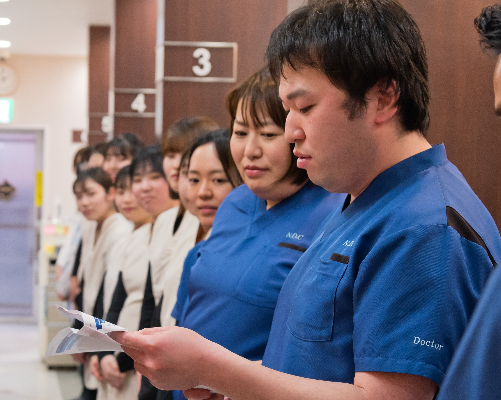
「すべての症例について、治療計画の立案から治療終了まで自分で担当できることにやりがいを感じています。症例相談やサポートが必要な場面では、院長をはじめ他の先生方がフォローしてくださるので安心です。」
知人の紹介をきっかけに、岡山からの通勤に合わせて勤務時間や休日に柔軟に対応していただける点に魅力を感じて入職しました。さまざまな職種のスタッフが立場に関係なく優しく接してくださり、分からないことも聞きやすい環境です。
すべての症例で治療計画の立案から治療終了まで自分で担当できることにやりがいがあります。症例を相談したいときや治療時間が押してしまったときも、院長をはじめ他の先生方がすぐにフォローしてくださるので安心です。
私自身も日々学びながら診療に取り組んでいます。お互いに学び合いながら成長していけたらと思っていますので、興味がありましたらぜひ一度見学にいらしてください。お待ちしています。
まずは幅広い一般歯科の基礎を確実に習得し、その先のステップとしてインプラントや外科治療へ段階的に挑戦できます。希望に応じてマウスピース矯正も学べる環境です。
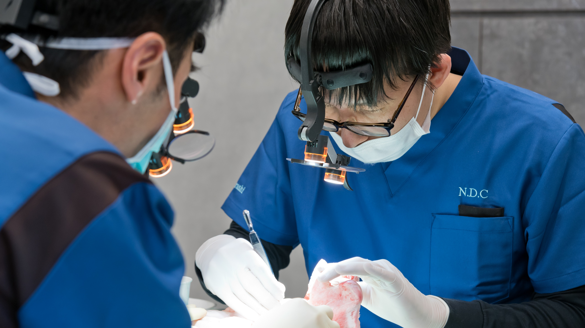
保存・歯内療法・歯周治療・補綴など、日々の診療で不可欠となる一般臨床を基礎から幅広く習得します。担当の先輩ドクターによる個別指導と診療後の振り返りを通じて、一口腔単位で治療計画を立てて診療できる土台を築きます。
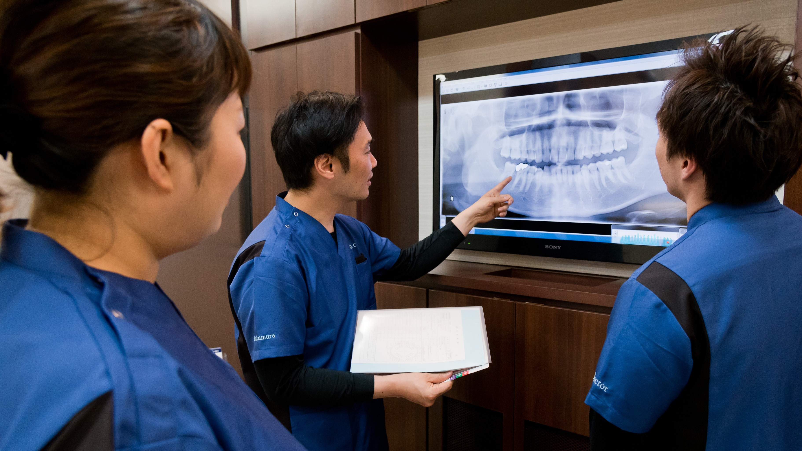
一般歯科の基礎を身につけたその先として、切開・縫合などの口腔外科手技やインプラント治療にも段階的に挑戦できます。いきなり任せるのではなく、セミナー受講からオペアシスト、CTによる術前診断、指導のもとでのオペへと安全に経験を重ねます。
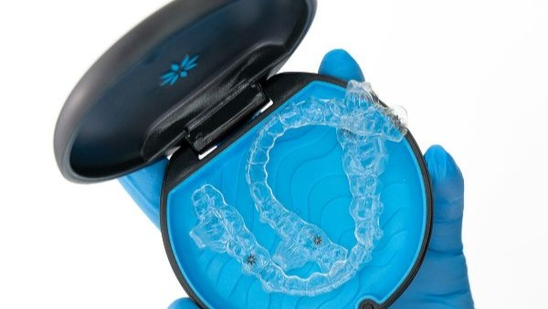
一般臨床を土台に、希望する先生はインビザラインなどのマウスピース矯正についても知識・技術を広げることができます。
| 項目 | 週5日勤務（常勤） | 週4日勤務（常勤） |
|---|---|---|
| 給与（総支給） | 505,000円 〜 705,000円 | 400,100円 〜 575,100円 |
| 勤務時間 | 8:00〜18:00 （実働9時間×週5日／拘束10時間・休憩1時間） |
8:00〜18:00・曜日相談 （実働9時間×週4日／拘束10時間・休憩1時間） |
| 休日 | 週休2日（日曜・祝日休み／シフト制） | 週休3日（日曜・祝日休み／シフト制） |
| 休暇 | GW・夏期・冬期・特別休暇・有給休暇 | |
| 福利厚生・待遇 |
社会保険完備・厚生年金・雇用保険・労災／交通費全額支給（新幹線通勤対応）／住宅手当・遠方転居支援（引越しお祝い金10万円〜相談）／採用お祝い金10万円（公式サイトからの直接応募時）／昇給 年1回／特別手当（医院規定）／セミナー参加支援（規定補助＋意欲に応じた積極支援）／学会出席費用の補助（要相談）／産休・育休制度（男性育休実績あり） ※固定残業代は実際の残業時間にかかわらず支給（実際の月間残業時間は平均約15時間）。設定時間を超えた超過分は別途支給。 |
|
| 応募条件 |
歯科医師免許をお持ちの方（卒後臨床経験2年目以上・ブランク可） 最低3年以上の勤続を希望します |
|
| 選考 | 書類選考・面接・見学（見学のみもOK・ZOOM面接対応）。提出書類：志望理由書、歯科医師免許証、写真付き履歴書 | |
大学院での研究や学業と両立しながら、臨床経験を積みたい先生へ。当院では大学院生のアルバイト勤務も募集しています。
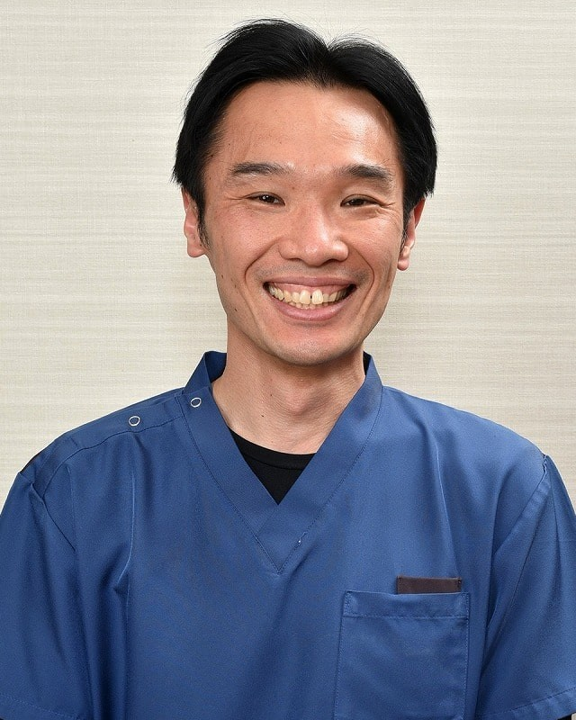
院長 中村幸生／2001年 神奈川歯科大学卒業／厚生労働省指定 歯科医師臨床研修指導歯科医／OSSTEM IMPLANT 臨床研究歯科医院（2022年認定）
これから歯科医師として一歩を踏み出す皆さん、はじめまして。なかむら歯科クリニック院長の中村幸生です。皆さんは今、3年後、5年後、10年後の自分の姿を思い描けていますか？大きな希望と共に、将来への漠然とした不安も感じているかもしれません。
私自身、研修医時代は厳しい環境に身を置き、がむしゃらに勉強と臨床に打ち込む毎日でした。厳しい競争の中、優れた先輩たちから技術や知識を吸収し、休みの日にはセミナーへ駆け込む。その中で「もっと上手くなりたい」という情熱が、私を突き動かす原動力となりました。
私が目指すのは、単に治療技術を教える場ではありません。「いつまでも美味しくご飯が食べられるように」という理念のもと、患者様を笑顔にし、その笑顔を守る「人財」を育てることです。
学生時代の経験や現在の自分に自信がなくても、何も心配はいりません。大切なのは「これからどうなりたいか」「何を成し遂げたいか」という熱い想いです。歯科医師人生の基盤となるこの最も大切な時期を、どこで、誰と、どう過ごすか。私たちの情熱を肌で感じてみませんか。
面接なしで、医院の雰囲気や診療体制を見ていただくだけでも歓迎です。
書類選考・面接・見学を経て、ご希望をすり合わせたうえで採用決定となります。
見学だけ、相談だけでも歓迎です。給与や働き方、教育体制についてお気軽にお問い合わせください。